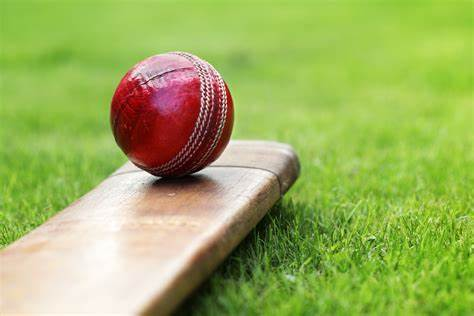

Cricket

Cricket is a bat-and-ball game played between two teams of eleven players on a field at the centre of which
is a 22-yard pitch with a wicket at each end, each comprising two bails balanced on three stumps.
The batting side scores runs by striking the ball bowled at the wicket with the bat, while the bowling and
fielding side tries to prevent this and dismiss each batter. Means of dismissal include being bowled, when
the ball hits the stumps and dislodges the bails, and by the fielding side either catching the ball after
it is hit by the bat, but before it hits the ground, or hitting a wicket with the ball before a batter can
cross the crease in front of the wicket. When ten batters have been dismissed, the innings ends and the teams
swap roles. The game is adjudicated by two umpires, aided by a third umpire and match referee in international matches.
They communicate with two off-field scorers who record the match's statistical information
Bat and ball

The essence of the sport is that a bowler delivers (i.e., bowls) the ball from his or her end of the pitch towards
the batsman who, armed with a bat, is "on strike" at the other end (see next sub-section: Basic gameplay).
The bat is made of wood, usually salix alba (white willow), and has the shape of a blade topped by a cylindrical handle.
The blade must not be more than 4.25 inches (10.8 cm) wide and the total length of the bat not more than 38 inches (97 cm).
There is no standard for the weight, which is usually between 2 lb 7 oz and 3 lb (1.1 and 1.4 kg).
The ball is a hard leather-seamed spheroid, with a circumference of 9 inches (23 cm).
The ball has a "seam": six rows of stitches attaching the leather shell of the ball to the string and cork interior.
The seam on a new ball is prominent and helps the bowler propel it in a less predictable manner. During matches, the
quality of the ball deteriorates to a point where it is no longer usable; during the course of this deterioration, its
behaviour in flight will change and can influence the outcome of the match. Players will, therefore, attempt to modify
the ball's behaviour by modifying its physical properties. Polishing the ball and wetting it with sweat or saliva is
legal, even when the polishing is deliberately done on one side only to increase the ball's swing through the air,
but the acts of rubbing other substances into the ball, scratching the surface or picking at the seam are illegal
ball tampering.